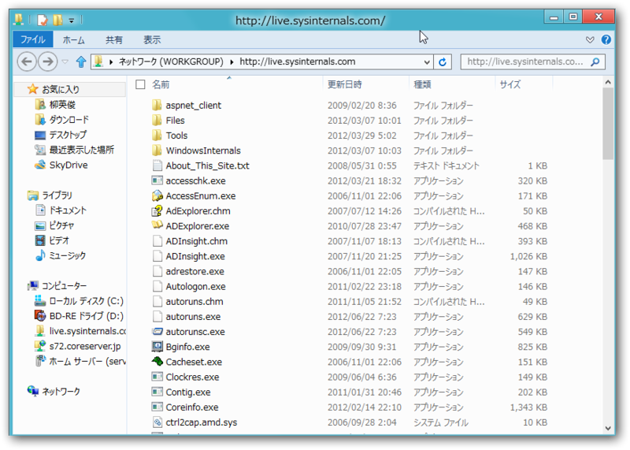

『Windows Sysinternals徹底解説』
執筆日時：
")
Windows Sysinternals徹底解説 ―― Windows管理者必携ツールを使い尽くすためのバイブル (マイクロソフト公式解説書)
- 作者: Mark E. Russinovich,Aaron Margosis,山内和朗
- 出版社/メーカー: 日経BP社
- 発売日: 2012/03/29
- メディア: 単行本
- 購入: 2人 クリック: 18回
- この商品を含むブログ (4件) を見る
WWD いってきたよ！ - だるろぐ でゲットしたので、もう2か月経つのか……月日が流れるのは早い。その間にも、この本は何度も役に立ってくれた。買ってよかったなぁと思う。日本語でまとまった情報が得られるのは、やはり心強い。
大部分は Sysinternals ツールのリファレンス（第2部）になっている。「Process Explorer」をはじめとするツールの使い方が手取り足取り解説されている。これをマスターすれば、システムのトラブルシュートに絶対役立つはず。
また、読み物として面白い部分も多い（第1部・第3部）。
とくに、第2章「Windows のコアの概念を学ぶ」は当然知っているべき内容がコンパクトにまとめられている。本当は『Windows Inside』あたりを読むべきなんだろうけど、みんながみんなそうはいかないと思うので、これだけでも読んどけ。知らなきゃ恥ずかしいぞ（←
あと、個人的には第1章「Sysinternals ユーティリティの始め方」や第3部「トラブルシューティング ―“ 原因不明の…の問題”」が面白かった。

第1章は Sysinternals の歴史の簡単な紹介（こういうの読むのが好きだ）と、知っておくと便利な Tips が紹介されている。 http://live.sysinternals.com/ をネットワークドライブとして追加しておくと便利だぜ、とか、コマンドラインで使うときに /accepteula スイッチで許諾画面をスキップできるぜ（未対応ツールあり）とか。知ってるようで知らないことが多い。
第3部は具体的に Sysinternal ツールを使ったトラブルシュートの実例がいくつか解説されている。だいたいは「Process Explorer」を使うのだけど、中には「Desktops」を使った Tips なんかもあって、へぇ、と勤務中に口に出してしまったぐらい。
そうそう、この本は業務に役立つという名目で、会社の業務時間中に読んでました。まじ役に立つ。